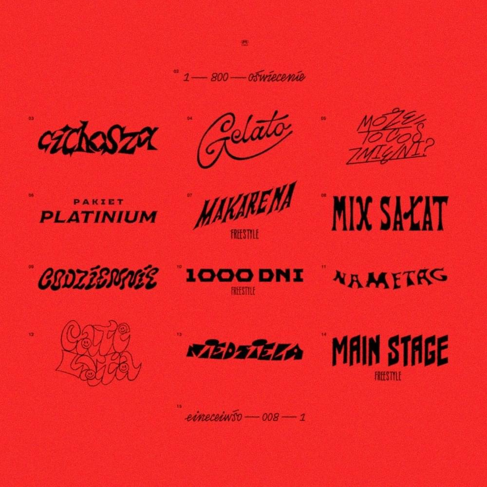

Oświecenie
Chociaż bardzo dobrze czuję się w tematyce sztuki użytkowej PRL-u, krzeseł, czcionek, czy rewolucyjnych rozwiązań designerskich wykorzystywanych przy produkcji Macbooka, to wydaje mi się, że jest to sfera na tyle specyficzna, że dośc niewiele osób przejawiałoby takową tematyką zainteresowanie - co jest oczywistym błędem, design jest zagadnieniem ogromnym, każdy znajdzie coś dla siebie. Z tego powodu właśnie, chyba lepszym rozwiązniem byłoby dotknięcie się czegoś bardziej przyziemnego - na przykład muzyki. Konkretnie mam na myśli rap. w końcu chyba każdy go kiedyś słuchał. Mamy do tego naprawdę dobre podłoże, zważając na to, że nasz dzisiejszy obiekt zainteresowań, postać dosyć konkretna na polskiej scenie rapu - Taco Hemingway, czyli również Filip Szcześniak - parę ładnych tygodni temu wydał nowy album pod tytułem 1-800-OŚWIECENIE. Wydaje mi się, że większość z nas choćby przypadkiem usłyszała już utwory Gelato czy Makarena Freestyle w momencie ich wyjścia. Jeśli nie, to mam nadzieje, że ktoś zaraz je odsłucha i się tym albumem zainteresuje. Bo on z pewnością do interesujących należy.
Od Filipa nie dostawaliśmy oznak życia przez 3 lata. No dobra, z drobną przerwą w postaci club2020, który dla mnie osobiście był niewypałem. Ot muzyka klubowa, nic specjalnego, chociaż czego innego mogliśmy sie spodziewać? Young Leosia w tym składzie raczej nie stanowiła zapowiedzi porządnych, poważnych utworów. Całe szczęscie to tych właśnie dostarczyło nam 1-800-OŚWIECENIE. Zacznijmy od samego początku. A płyta zaczyna się od... Przerywnika. Dla niektórych są one irytujące, inni doszukują się w nich mawiązań do poprzednich albumów - zresztą bardzo słusznie. Mimo podejścia, cięzko zaprzeczyć, że te osobliwe, wciśnietę między piosenki dialogi są już elementem charakterystycznym Taco, a według mnie on zajął się nimi lepiej niż sam Eminem, chociaż nie zamierzam mu umniejszać - tych dwóch facetów nie powinno się ze sobą porównywać. Radio Marmur, audycja 1-800-OŚWIECENIE, nocna terapia dla zlęknionych upływem czasu słuchaczy. Aż widać te drogowe światła kątem oka, chropowata tekstura kierownicy sama kreuje się pod palcami. Wysawało mi się, że lepiej niż Dziennik Pokładowy Europa nie da się tego utworzyć. ale była to oczywista pomyłka - Radio Marmur jest zwyczajnie bezbłędne. Piosenki też sa niczego sobie, przykładowe Cichosza, Mix Sałat, pakiet Platinium czy Nametag - rarytasy.

Zalecenia - słuchać na zapętleniu. Wszystko owinięte tą lekką otoczką niepokoju i siedzącego z tyłu głowy głosu , który w kółko szepcze o fakcie przemijania. Chwila w której czytasz te słowa jest inną od tej, w której czytasz te. Jesteś już inną osobą niż minutę temu. Oczywiście nie wszystko jest takie piękne i idealne. I mam tutaj na myśli konkretne pozycje. Co dokładnie? Ano przykładowe gelato, które marnie stara się pwoielić klimat Deszczu ma betonie i kończącego się lata, albo Codziennie, które ani nie brzmi, ani nie niesie ze sobą czegoś szczególnie odkrywczego. Czy też nawet Całe Lata, które nie jest złe - ale czy naprawdę czekaliśmy aż trzy lata na kolejny zwyczajny, wakacyjny hit radiowy?